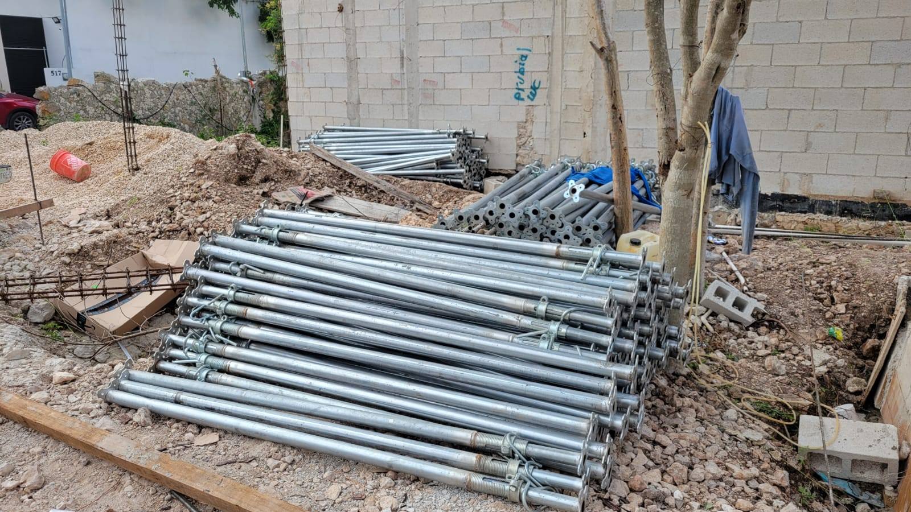
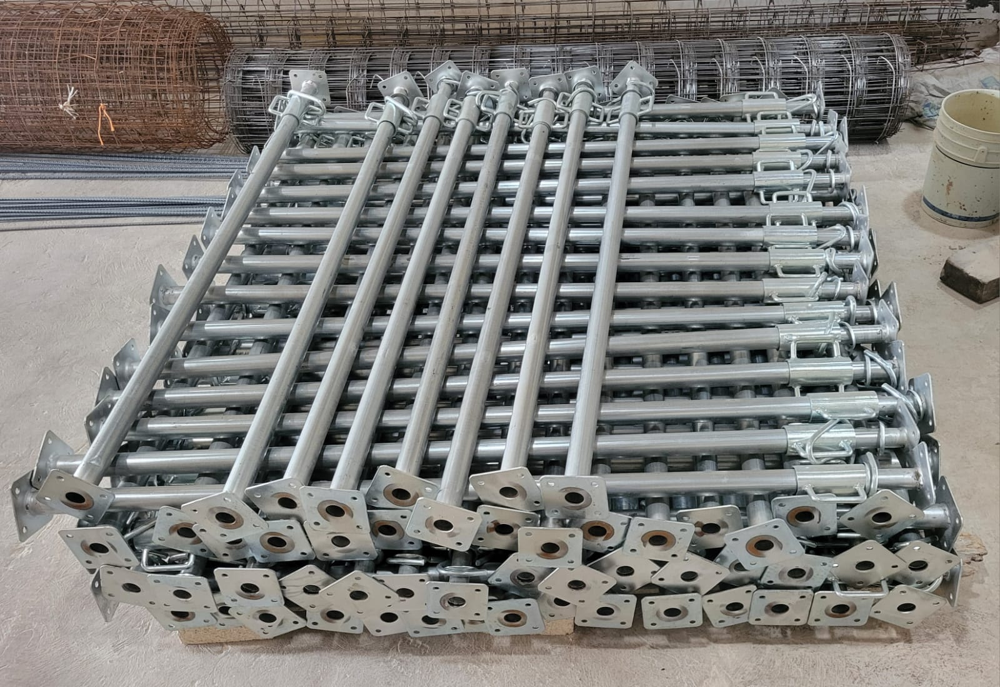
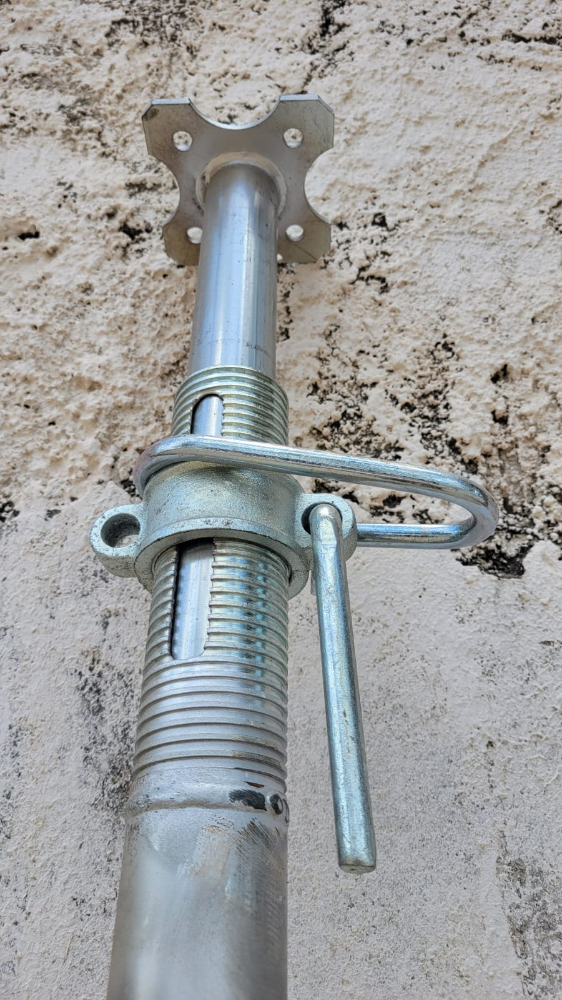
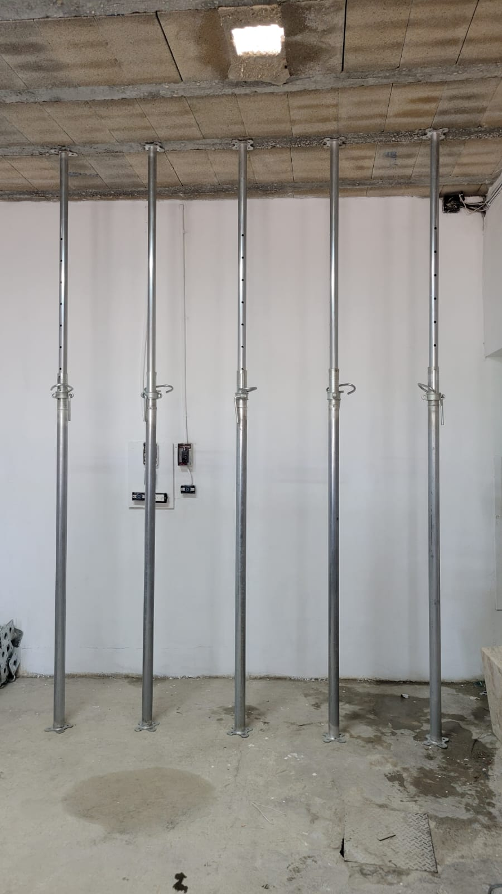

Soporte de losas
Apoyo temporal durante el colado, curado y trabajo estructural.
PUNTALES PARA CONSTRUCCIÓN EN MÉXICO
Encuentra la solución de puntales que necesitas para tu proyecto. Cuéntanos qué vas a construir y recibe atención directa.
WhatsApp disponible. Número para llamadas pendiente de configurar.

OBRA EN PROCESO
SOLUCIONES PARA OBRA
Apoyo temporal durante el colado, curado y trabajo estructural.
Soporte para muros, vigas y elementos que requieren estabilidad.
Alternativas para proyectos de distintas dimensiones y necesidades.
EQUIPO AJUSTABLE
Disponibles en 3 m y 4 m. Las imágenes muestran puntales metálicos con sistema de ajuste y placas de apoyo. Confirma disponibilidad y especificaciones al contactarnos.



POR QUÉ CONTACTARNOS
Resuelve dudas de producto y disponibilidad por el canal que prefieras.
Comparte el tipo de trabajo para identificar la solución que corresponde.
Sin formularios: inicia la conversación con WhatsApp o una llamada.
APLICACIONES
ATENCIÓN EN MÉXICO
La cobertura, logística y condiciones aplicables se confirmarán al contactarnos.
PREGUNTAS FRECUENTES
Sí. Usa cualquiera de los botones de WhatsApp para iniciar una conversación directa.
Este dato está pendiente de confirmar con el cliente y deberá actualizarse antes de publicar.
Contamos con puntales de 3 metros y 4 metros. Consulta la disponibilidad para tu proyecto al contactarnos.
Describe tu aplicación, las medidas y la etapa de obra al contactar al equipo para recibir orientación.
La cobertura exacta se validará de acuerdo con la ubicación del proyecto y la operación de la marca.
EMPIEZA HOY